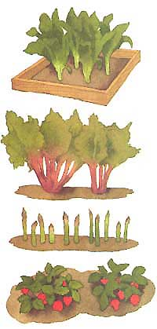
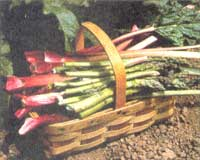
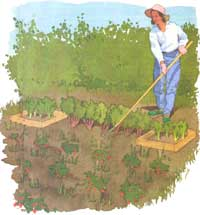
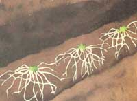
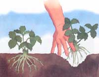
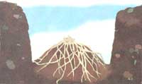
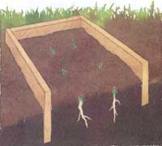

GEARING UP FOR THE SPRING GARDEN
It wasn't till one evening in June-a little more than three years after quitting the city rat race and moving onto a little New England hill farm-that I began to feel deep down that I'd really arrived on the land.
I'd collected the eggs, fed and watered stock that morning, put supers on the beehives, worked the gardens, and fed the weeds and thinnings to the rabbits and goats over the afternoon. Then my wife and I and some special guests (the kind who help cook and clean up) sat down to a feast that no restaurant offered and that no grocery could provision-our first 100% fresh, 100% chemical-free (and nearly cost free to boot), 100% home-raised meal. The entree was crisp on the outside, succulent inside haunch of spring chevon (that's kid-young goat) I'd spit-roasted on the hearth. We had roasted White Mountain potatoes from the cold cellar, wheat bread still steaming from the woodstove oven, sugar snap peas and young beets with greens from the gardens, and a half-cultivated/half-wild green salad dressed with home-pressed apple-cider vinegar-all of it washed down with homemade dandelion/citrus wine and pioneer coffee of ground roast white oak acorns and chicory root. Highlights were a sauce for the chevon made with our own honey, cracked turnip (mustard) seed, vinegar, and fresh grated horseradish, crisp but tender asparagus almost two inches thick at the base, and strawberry-rhubarb pie from the asparagus/strawberry-rhubarb/horseradish bed I'd put in during our first spring on the place.
Over the years, goats and other livestock came and went, vegetables were planted every spring, and the home cider pressing and wine making was so labor intensive that it proved to be but a brief experiment. But the asparagus/strawberry etc. bed fed us with little attention till real-estate development pushed us farther into the wilderness. Last I heard it was producing still for new owners more than a generation later.
It is mighty fine to sink your roots and psyche into a piece of land, even if it's no more than an acre or two and you still commute to a paying job in town. A good way to confirm those roots to yourself is to set in plants that may take awhile to bear, but that will continue producing for years, decades, or a lifetime. It affirms that you anticipate a degree of calm and settled, rural, low-tech permanency in this unsettled, urbanized, high-tech age. If you'll be able to stay put for a while (or perhaps, even if you won't) here's how to build an old-time asparagus/strawberry bed, with plantings of horseradish and rhubarb that will feed you and yours for 20 years and more.
Lasting Harvest
My old strawberry/asparagus bed is still producing...thirty years later!
Asparagus is a member of the Lily family of long-lived, storage-rooted perennials. It originated in coastal Eurasia and came to North America with early settlers. With few cultural demands other than an absolute need to be chilled well over winter, one variety or another will grow practically anywhere but in the Deep South. Indeed, it naturalizes easily; the red seed berries produced by mature female plants each fall are relished by birds, and they scatter the seeds widely in their droppings. Once you've grown your own asparagus, you'll begin noticing the distinctive fern-like greenery reaching above grasses and low weeds in fields, meadows, and along roadsides everywhere. Fronds grow three to four feet high with a fine, lacy umbrella high up on the thin, woody stalk that allows the sun to filter through. So, you can plant low growing, broad leaved annual vegetables or biennial strawberries between the asparagus rows and they will thrive.
Commercial growers propagate asparagus roots from seed, dig them when dormant in late fall of their first, second, or third year, then wash, sterilize, and store them bare-rooted over winter for sale early the following spring. Most roots sold are two-year-olds that will be ready for harvest after two more years of growth. I've been told that only the larger and more vigorous two-year-old roots are sold; smaller specimens and unsold leftovers are replanted or left in the ground to grow another year. The resulting three-year-old "jumbo roots" are not that much larger and offer no harvest advantage over two year olds, but cost more. One-year-old roots must be left unpicked for an extra year before harvest-hardly worth the dime-a-root advantage in price. In my experience (having tried all sizes as well as growing from seed), you will end up with heartier stock that produces better over the long run with vigorous two year old roots.
Here in the Northeast, boxes of dry asparagus roots arrive at our local farm co-op and some hardware stores and garden supply houses in late March or April. Most mail-order seedsmen sell them as well. Price is $4.00 to $6.50 for bundles of 10 one-year-old roots, a buck more for two-year-olds, and maybe 80 cents more for threes. When bought by mail, you can't specify arrival date, as they aren't removed from cold storage till "time for planting in your area" late March, April, or May. Most seedsmen won't mail live plants outside the continental U.S. and Canada. Plants are grown from sterilized seed in heavily fumigated land, and are certified to be free of asparagus rust and fusarium, two soil-borne diseases that seldom kill but can disfigure spears around the base, making them small, crooked, and tough, and that generally debilitate the plants. California prohibits their import altogether.
Asparagus roots resemble nothing so much as octopi too long out of water: a cluster of ugly gray-brown, foot long, pencil thin, rubbery single strand roots dangling limply from a central disk. They usually arrive in the mail packed in sawdust and are better stored dry in the heat of the kitchen than down in a dank cellar where they will absorb water and sprout a luxuriant blue-green mold. Indeed, if you order by mail, I recommend that you immediately remove the roots from the packing and dry them out. I'll bet you a serving of asparagus with hollandaise sauce that they are already a little moldy. Don't wash them. Just let them dry well and the mold will go dormant (and be eaten by soil organisms once roots are planted). If they must be kept for more than a few days before planting, untie the roots and put them loose in the main body (in dry air) of your refrigerator till planting time.
A bundle of 10 roots will fill about 20 feet of row and produce four to five pounds of spears per year over a month-to-six-week cutting period. That means that for each one pound of spears you will need a pair of mature roots, requiring three to four running feet of row (rows and roots in the row spaced 18" to 24" apart). To figure out how many roots to plant, buy enough store asparagus to provide side dishes for the family. A one-pound bundle will be ample for most. Decide how many times a year you want asparagus (including frozen meals). Multiply the pounds used per meal by two to determine number of roots needed and multiply that figure by 3.5 to 4 to determine feet of garden row required. (Example: 20 meal/yr x 1 1b/meal = 20 1b/yr x 3.5 row-feet for the pair of roots needed to produce a pound of spears = 70 row-feet, needing 35 roots.) If your garden is the typical 25 feet wide, that's three rows taking up seven or eight feet at one end.
For years, Mary Washington (a reselected, open-pollinated variety) was the standard for home gardens. It is still sold (as is Waltham, the even earlier standard variety), but these days you can find a wider selection. A good choice for mild climates such as the Pacific Northwest, the Southwest, and Southeast is UC 157...(12 roots for about $15.00 from Johnny's Selected Seeds). The best-adapted for most of North America is the Jersey Giant/Knight hybrid developed by Rutgers University. It ignores asparagus root and crown rots, resists rusts, and produces mostly male plants which, being spared the chore of making berries and seed, live longer and produce more heavily than the ladies. If you do get a female plant that produces small red berries, don't try planting its seed, which will be open-pollinated and of uncertain quality.
If you do want to try growing from seed, production will be delayed an extra year while you grow seedlings in a nursery row for conventional transplantation. Burpee sells Mary Washington seed (along with its roots and roots of Jersey Giant and UC 157). But so far, seed is the only way so far to obtain Viking KB3, a new hybrid widely adapted for heat and temperature extremes and recommended for both the Great White North and for the South. It was developed and is sold by the Canadian seed house, Stokes.
In asparagus rows, dig a trench 1.5 feet deep and wide, mounding soil in a 6 inch high ridge down the middle.
For luscious red fruit that begin to appear when the asparagus is almost gone by, set strawberry plants between the rows of asparagus roots. The berry plants do well if planted one foot apart, in rows two feet apart. Since asparagus is spaced two feet apart in rows the same distance apart, purchase twice as many strawberry plants as you have asparagus roots.
Like commercial asparagus roots, one-year-old strawberry plants are dug in the fall and stored bare-root over winter for sale in early spring. Bundles of 25 go for $5.00 to $12.00. Traditional June-bearers turn out one large spring crop and come in the largest variety for the widest range of growing conditions. Everbearers produce a large crop in June and a single, smaller crop of smaller fruit in the fall. Ozark Beauty is a widely adapted everbearing variety. The new Day-Neutral varieties set and ripen berries year round, with a larger crop at one end of the season, or the other, or both.
I've tried them all and find that I get more seed than berry anytime but June. I keep experimenting with new varieties; but for guaranteed pies, jam, and pigging out on vine-ripe berries, eaten out of hand in the berry patch, I stay with June-bearers. Most are self-pollinating; but to be sure you get a good crop, plant at least two varieties. Buy plants locally or get Raynor's and other strawberry growers' catalogs advertised in Mother. Grow several varieties recommended for your area. If one proves to be far superior, transplant its runner-born plantlets out into your entire bed. Or (as is best every five years anyway) buy all new disease free parent stock and renew the bed. In gardens located from Central Pennsylvania to Northern Michigan to Coastal Maine, I've never found a more reliable strawberry variety than Sparkle.
Spread strawberry roots so that they're alt covered, but just the bottom of the bud is well underground.
Anative of Turkey, and best adapted to cool climates, rhubarb is one of the few garden plants cultivated for its stems only. Leaves and roots contain oxalic acid among other poisons and are toxic. Don't plant anywhere toddlers can get at it.
The best way to obtain plants is to convince a gardening neighbor that her plants are overgrown (which they probably are). At anytime of year, but best done when the plants are dormant, drive a sharp spade down through the middle of any rhubarb plant and grub out whichever half comes most easily. Put compost in the hole and the mother plant will be spurred into renewed vigor. Divide the reddish, knobby-topped root cluster into quart-jar-sized cuttings and pop into your garden. Or you can buy divisions at most garden supply houses in the spring. I don't know of any mail-order sources, as the plant divisions are bulky and cannot be shipped bare-root and dry.
To harvest, pull the large, thick stems away from the plant base, big spade-shaped petiole, and the lower end and all. Snap off the leaf, wash the stem if needed, and cut into half-inch sections. For a crisp, tangy stewed fruit dish, cook slowly till juice is out and pieces are just soft....simmer with ap-inch of salt and an equal amount of sugar in just enough water to cover the pan bottom. Don't cook too long unless you like it broken up and slimy. Mix uncooked with equal amounts of halved strawberries and white granulated sugar for a tart pie filling.
From my great Aunts, I learned to cook early rhubarb with rehydrated dried fruit (home-dried apricots and cranberries, California prunes and raisins) or with home-canned sour cherries. We enjoyed it chilled in bowls as stewed fruit, as a filler for tarts, or spread on bread. This was how the old-timers "stretched" one of the first harvestable garden crops of the year.
This big coarse rooted member of the Mustard family is a hardy and vigorous plant with rough-looking leaves and a root resembling a coarse skinned parsnip some two to three inches across at top, tapering to an inch or less and breaking in the ground at a length of six to 12 inches. A South Eastern European native, it has been adding tang to meals on this continent since the early 1700s.
Maliner Kren is the standard Bavarian cultivated variety. You can buy cuttings by mail in lots of five or six for about $1.50 per root. Cheaper and easier is to get a few roots from a gardening neighbor (late fall is best, but you can dig them anytime of year) or buy roots from a fancy greengrocer. Slice each root into four to 12 four-inch-long pencil-sized slips. Be sure that each contains a section of outer hide and a portion of the buttonlike flat top (where leaves once grew and will sprout again). Let the cuttings dry till the cut sides cure. I like to plant them in late winter-flat top up-an inch or so deep in a 6" pot filled with potting soil and keep them on a sunny windowsill till leaves come up. When soil is warm, I transplant them outdoors, mulch, and forget them till they are dug up in the fall and stored in the cellar with other root vegetables.
Horseradish is best if peeled, grated, and used fresh (a section of washed-but not peeled-horseradish root and a grater along with a cellar of coarse salt are traditional accompaniments for spit-roasted beef and Yorkshire pudding in our house). Or, mix gratings and their juice with salt and white vinegar and keep in the refrigerator.
If left in the soil for more than a season, the plants will expand aggressively and your garden will soon be choked with a solid block of woody and unusable horseradish that is so thickly matted and has roots down so deep that it is nigh impossible to grub out.
Practical choices are to: (1) Dig it all each fall and replant cuttings next spring or (2) Box it in with escape-proof edging. I do both-growing new cuttings each spring inside squares or rectangles of foot-wide scrap lumber buried in the ground so only the top inch or so protrudes. Inch thick pine lasts four years or so before it needs replacing. That green PT lumber that's pressure-treated against rot would last longer, but I don't want copper arsenate or whatever in the food garden. You could install roof shingles, flashing, or corrugated metal lawn edging around just so that the barrier sticks up above ground and extends six inches down.
A cross section of the asparagus trench during planting.
Planting horseradish is more than easy; stick a chunk of root in the soil and it will grow. However, in our rocky, shallow New England soil, any root vegetable can be hard to dig. And when you get it out, the root will be bifurcated or worse from snaking around rocks. I want juicy roots that are thick enough to have something left after their rough rinds are peeled away, and that are uniform in shape and easy to grate. So I pick out rocks and when compost, rotted manure, or augmented peat moss goes in to enrich the bed, I also pitch in enough sharp sand plot that the soil is loose to a foot depth. A square yard will grow about fifteen roots and produce a quart or two of gratings plenty enough for most families for a year.
Hard Work
I used to dig the deep bed by hand, but that was when my back had a few less miles on it.
Asparagus is what's called a "deep, heavy feeder." Its roots are a foot long when you get them and will grow down another foot and more. To produce an abundant harvest of thick, juicy spears (in excess of those it needs to regenerate) each spring for a generation, they must have a good stockpile of plant food down where the roots are. Which means that the best planting bed is a deep trench filled with rich soil packed with organic matter that will attract earthworms and continue to decay and produce nutrients for years. I've been known to dig an asparagus bed by hand with a spade and garden fork, but that was when my back had a few less miles on it. A perennial edibles bed is one of the best reasons I know for (lacking a farm tractor with a backhoe or digging bucket on the front) investing in a big rear-tined rotary tiller. A good reason for keeping a horse too.
Whatever your soil source, mix in a winter's output of wood ash or a good sprinkling of ground limestone to add potassium and trace elements and to neutralize acids. Asparagus is not all that picky as to soil pH, but nearly all North American soils are more acidic than it likes, and it will benefit from some ash or lime to sweeten it. It is best to consult your local Cooperative Extension Service or other expert sources for proper lime-application rates for your soil.
However you get it done, dig your bed as deep as you can manage. A yard down is ideal. First, remove the upper layer of dark topsoil and lay it to one side of the trench. Remove the next foot or so of lighter colored semi-rich undersoil and put it on the other side. Then dig out as much clay, sand, rocky marl, or whatever pale, base subsoil you have compost or topsoil to replace. Discard the base soil. Now, refill the trench with alternating shovelfuls of top-soil, compost, and whatever additives you have. Fill in thin layers (stomping well between each layer) to within 18" of the top.
Horseradish and rhubarb both grow taller than strawberries but not as high as asparagus ferns. They are dense and will shade the berry plants so I locate them on the ends or the north (shade) side of the bed. I prefer to locate the bed at the top (north) of the middle garden (with staked tomatoes, tall sunflowers, corn, and pole beans above it. I then set rhubarb plants all along the upper margin and put rhubarb in one or two boxed plots along the sides. I choose the lowest, coolest, and shadiest end of the bed for horseradish. It will grow practically anywhere; in shade, roots will just be smaller.
Lay out asparagus rows two feet apart. In each row, dig a trench a foot-and-a-half deep and wide, mounding soil in a 6"-high ridge down the center of each. Set a root alongside the ridge every foot and a half to two feet. Starting at the sunniest end of the row, scoop ridge into cones by each crown. Arrange the long roots evenly around the cone, cover with soil, and press firmly into the soil. The top of the first crowns should be a good foot below the surface. As you go down the row, make each mount a little higher, till the last one at the shadiest end of the row is about 6" below ground level. Now, rake soil in until it is level and just covers each crown. Leave it loose. Over early spring, as the shoots appear, rake soil in to cover them until the trench is full. The small first-year fronds will nourish the roots all summer. Keep weeds down and mulch the soil against summer dryness and heat.
Once your asparagus has grown tall enough that you've filled the trenches level, plant strawberries a foot apart down the center of the open strips between asparagus plants. Cut the raffia holding plants in bundles, remove dead and discolored leaves, and put the plants in a bucket of warm water. In the garden, dig a fan-shaped slit in the ground. You'll find that a new berry plant has a crown of leaves, a firm, grape-sized bud, and a bunch of small roots growing down from the bud. Spread plant's roots out in a fan shape and insert them into the slit so that all roots are covered but just the bottom of the bud is underground. If planted too deep, the bud will suffocate. If planted so shallow the tops of roots are exposed, they will dry out and the plant will die. Press soil very firmly around roots. Make a small rain-holding saucer in the soil around each plant and water well with a weak solution of liquid fertilizer and tepid water. Mulch with straw, weed-free hay, or other loose organic material and keep soil moist till plants are bushy with new leaves.
The strawberry plants will try to fruit, but don't let 'em. To force energy into root storage for a bumper crop next season, pinch off first-year flowers as soon as the little sprays of blossoms sprout. Each plant will also put out runners that will grow new plants at every node-resulting in a mat of new plants that will all fruit the next year. Left alone, in two years or three, a berry bed will become a thick mass of plants that produces few berries. In small plantings, you can be picky and guide and prune runners and thin plants. I find it easiest to let them go wild, but each fall I take out every other 2'-wide row (starting with the original parent plants the fall of their fruiting year; the next year taking out their offspring in the rows to each side of the originals and so on, alternating every year). Though it sounds wasteful, this is the best way to have good strawberry crops year after year. Rototill the soil in a good 18"-wide band even if a lot of berry plants are jerked on still-strong runners from the fruiting beds to each side. Plants remaining will have the bare ground to flower, fruit bountifully, and fill the bare strips with vital new plants next year.
Set rhubarb root divisions into the soil so that the tops of crowns are just visible. Place them two feet apart in all directions. Don't cut any stalks the first year. Next year, pull (don't cut, pull off from the base) only a few large, fat stalks. Thereafter, you can pull fully grown fat stalks till the June strawberries are gone by. The large leaves are mildly toxic, so snap them off and leave them to compost down around the parent plant. They go flat and make a good weed deterring mulch.
Once leaves are fully grown in spring, plants produce a large flowering stalk from the middle of the plant. It will develop an obscene looking fist-sized (and shaped) lump of a flower bud at the terminal end that will erupt into a great ugly conical mass of blossoms if you let it. Flowering is futile, wastes a great deal of plant energy, and the whole plant looks droopy stemmed and exhausted in its summer long afterglow. So, let the flowering stalk develop till the bud is up at about leaf-top level. (The plant will grow another if you pinch it out too early. May try anyway.) Cut it out at the base. The plant will grow lustily all summer, produce profusely next spring. Of course, it will get all pouty and try to flower again next summer and you'll have to dampen its ardor again.
Good Planning
Strawberry plants will try to bloom in the first season. Don't let 'em.
Boxed horseradish will keep the rest of the bed from being overrun.
The first growing year, don't pick anything. Leave asparagus, strawberries, horseradish, and rhubarb to grow and accumulate strength in their roots. Pick blossoms from strawberry plants and flowering stalks from rhubarb.
The second year, strawberry plants come into full production, so harvest them all. You can cut a few fat, plump asparagus and rhubarb stalks, but just a few. Keep them, ends in water, in the refrigerator and they'll last till all plants have contributed. Let the rest of the stalks go to leaf.
The third year, pick away. A fully grown asparagus plant produces perhaps 10 spears a year to reach its half-pound output...the first set of thick spears up to 2" at base and 1/2" at top, and a second set that is under 1" at base, 3/8" at top. You can safely harvest five or six spears per plant over four weeks. After that, the plant needs to make fronds to store. Spears should be harvested when they are 6 to 8 inches high, while buds on the ends are still tightly wrapped.
Pencil-thick, hard stalks should never be cut, as they indicate that the plant is reacting to stress and needs all the strength it can gather. This "pencil-grass" is too tough to eat anyway.
You can use a long handled V-blade dandelion weeder as an asparagus knife, and cut off spears several inches below ground. Problem is you are buying a lot of garbage; the end of each spear is bleached white, woody, and inedible and usually gets thrown out. Better to harvest only the edible portion, leaving the below ground ends to recycle naturally and return to the soil. Poke your fingers an inch or so down into the soil beside each spear and snap it off briskly with your thumb. Where the spear just naturally breaks is a comfortable 1/2 inch or so above where the woodiness begins.
Harvest rhubarb stalks so long as they keep growing out fat and juicy, or till the flower stalk appears and leaves begin turning red at the ends. Every few years is a good time to divide rhubarb. In early spring, cut off one or two quart jar size chunks of root from the larger specimens and plant them out or give them to friends. Any plants that have lost vigor and quit producing really fat spears each spring should be removed and new cuttings planted into fresh compost in their place.
In late fall (of the year you planted the cuttings, don't let them grow a second year) after a good frost or two, is the time to harvest your horseradish. I dig up the entire bed with a garden fork, shake the roots free of soil, and lop off the leaves. Thick, well-proportioned roots are stored in the cold cellar for peeling and grating as needed. Any so gnarly as to be unusable roots or any with soft spots or other apparent rot are saved to be cut up for replanting. The soil in the bed is forked well and mixed with enough compost or top soil to replace plant material removed. I replant the saved cuttings and mulch with the leaves from parent roots just dug up. Horseradish gives a lot for very little care in return.
Damage Control
Severe rot problems can only be overcome by uprooting and burning the bed.
The best medicine against problems of all kinds is prevention. Weeds can choke out the bed and bugs will hibernate at the base of the plants, so in the spring of each year cultivate any bare ground shallowly to expose bug larvae and sprouted weed seeds. In summer of the first year, once the soil dries out, snug mulch around asparagus fronds, berry, rhubarb, and horseradish plants to keep weeds down. Hand pull large weeds that poke through.
You will see rust, malformed stalks with brown-tinged lesions around the base, on a few asparagus plants, but the stalks are still delicious and most varieties are resistant enough that it won't do significant harm. In the heat of summer some years, the fronds will host a considerable gathering of asparagus beetles-colorful little red and black semi-hard-shelled bugs that are quick to flee and hard to catch in the heat of day. In my experience, the little stinkers sleep away from home (they dig into the mulch, I'm told) and don't come looking for food till the sun is up. I've never noticed that they do much harm to fronds (that are old enough by the time the beetles arrive that they've about done their job of reinvigorating the roots for next year's crop), so I've never worried about them. However, I do compost burn the top mulch and old fronds each fall.
If I ever do see the beetles threatening severe damage, rather than lose the planting I would compromise my organic principles and apply a USDA-approved, short-lived chemical insecticide advertised as effective against hard-bodied insects. Since the rhubarb and asparagus crops are already in and the new horseradish won't be dug till fall, I wouldn't worry about getting poison on anything edible.
If the leaves on your strawberry plants turn red well before frost, and/or if the berry plants pull out of the soil too easily and roots look wet, dead, or puny, and/or production falls off precipitously, you have a rust or rot problem. The only cure is to overhaul the bed. To be honest, relocating it to fresh soil for several years is best. Otherwise, after hard frost, uproot all the strawberry plants and burn them in a fire along with all old mulch and leaves. Plant the bed to a "green manure" crop such as winter wheat and till it in before the asparagus gets started in early spring.
Now, on the bare ground, let nature take its course and kill out the strawberry diseases by letting it go semifallow for a season. I grub out all burdock, grasses, and other persistent weeds, till shallowly between the asparagus several times during the year (before any weeds can go to seed), and finally burn the plot off in the fall. Burn again in spring just before tilling in fresh compost and lime and replanting a new lot of strawberry plants. I'm sure to purchase an especially disease-resistant strain from a different company than where I got the diseased stock.
After the tall greenery turns brown in the fall, pull mulch away from the borders and, if you've not edged the entire bed, dig out sod where it has encroached at the sides. Spread compost or rotted manure and till or hand cultivate shallowly.
Asparagus fronds are tough and don't rototill in very well. Also, they can harbor bug eggs that will happily overwinter, tilled into the ground or not. I like to go down the rows and, using an old (but sharp) hook-bladed linoleum-cutting knife, grub out all the old fronds as far below ground as I can cut. I toss them at the base of a fresh compost pile along with any corn stalks and tough broccoli and sunflower stems still left in the garden. Or, I save them to be burned, and the ashes scattered back on the land. (If stacked up off the soil beside the outdoor fireplace where I boil off maple sap, these woody stems dry out under the snow and make great sugaring off fire kindling.)
Then, I go down the rows and lightly rake old mulch and dead berry plant leaves off of the alternate rows that contain the new-generation strawberry plants and mound it over the old plant rows. Then I till it in very well (old berry plants and all) or (better) burn it and then till. A good sprinkling of composted manure mixed with soiled stable bedding goes on the fruiting bed. Finally, over the whole plot, I scatter six inches of loose salt hay, a type of grass that is harvested from coastal salt marshes, so it lacks inland weed seeds. It is expensive inland but you can use wheat or rye straw. Don't mulch with regular hay unless it is old and half rotten. New hay is full of weed seed and will turn your asparagus bed to what we call a "hay-mowing" here in New England. Lacking a natural mulch, the asparagus bed is one place I'd recommend spending the money for ground peanut shells, corncobs, shredded bark, or other organic mulch.
The asparagus and new berry crowns will push right up through your mulch in the spring, and it will keep the new berries away from soil-borne rots. Be sure to sprinkle on limestone some time during the year to neutralize the acid content of mulch as it rots down, bark especially. To spread out the harvest, you can pull mulch away from crowns of half the strawberry plants as soon in the spring as you can. Sun will warm the soil and those plants will fruit a few days earlier than the rest.
During the fall overhaul, I also pull out and compost old horseradish and rhubarb leaves and scatter any leftover compost or manure over the dormant crowns. But I'm sure to be careful of next year's rhubarb buds that often break the soil in fall. Then it's just a matter of waiting out the winter, confident that, in a carefully prepared bed, and after judicious harvest and good fall "putting to bed," the asparagus, strawberry, rhubarb, and new horseradish roots are preparing to gift us with a bountiful harvest next year.
|
 WALTER CHANDOHA |
 ILLUSTRATIONS: JOEL POPADICS |
 |
|
 |
 |
 |
|
 |
|
|